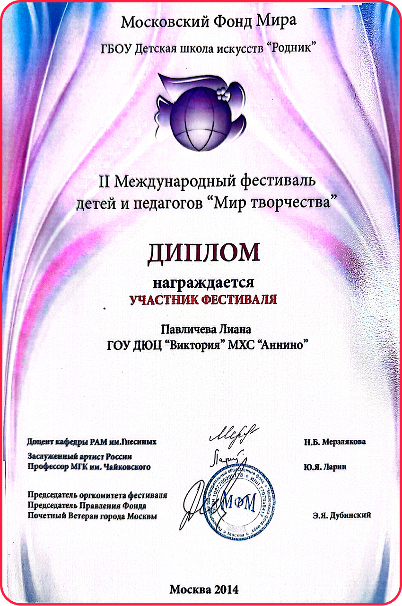
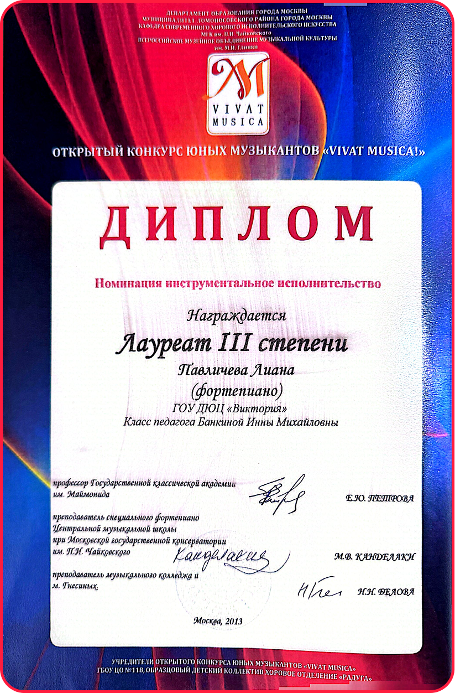
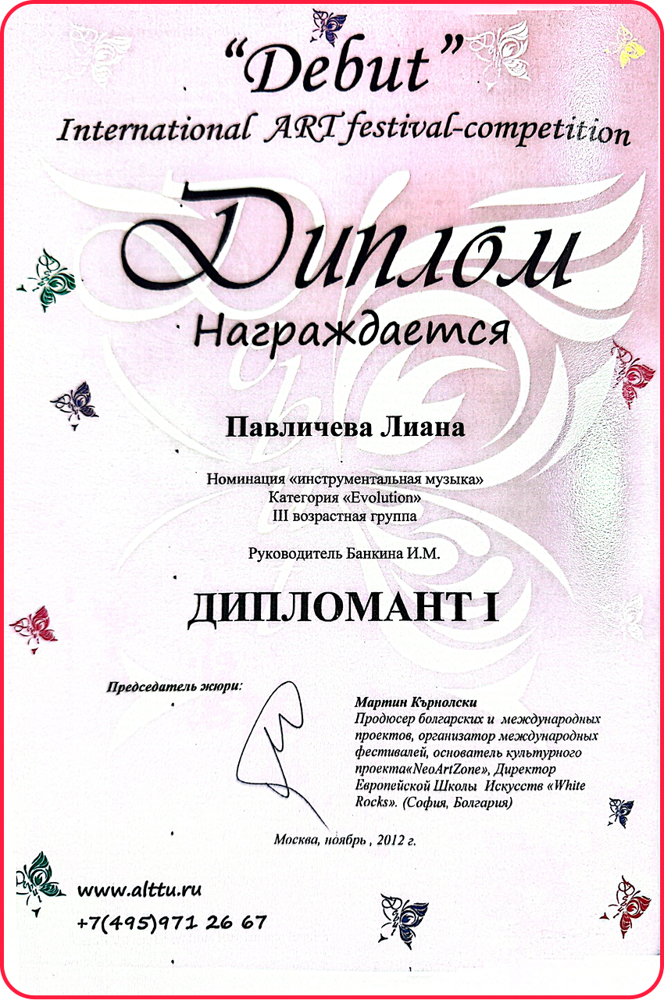
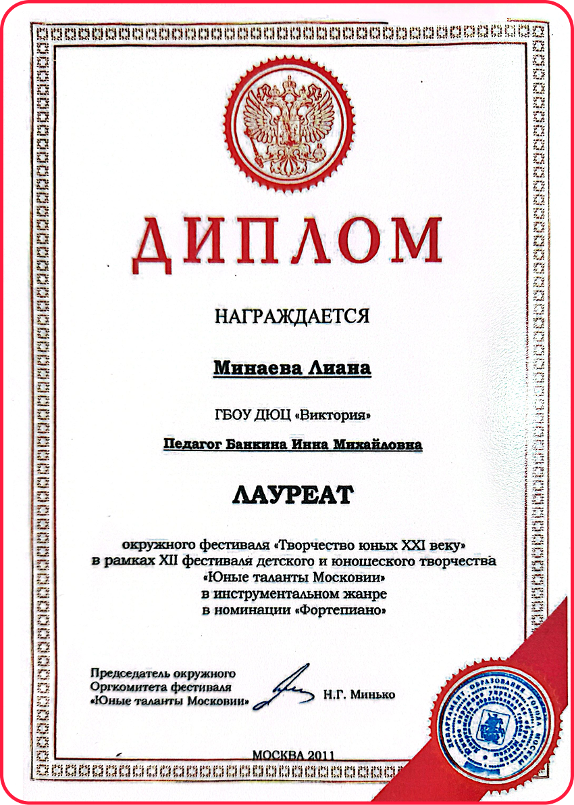
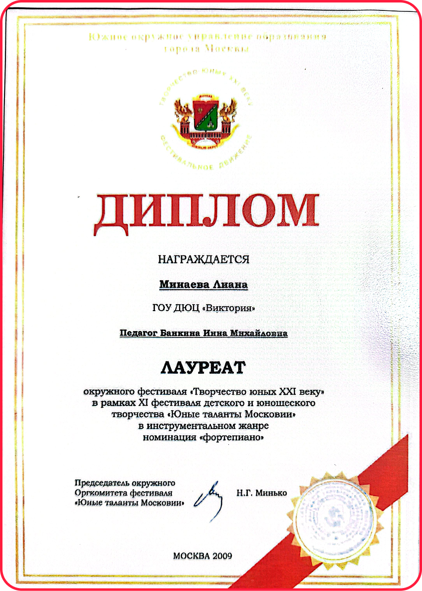

Meet Liana
Fortepiano Academy is led by Liana, a Russian-trained pianist and piano teacher based in Wentworth Point, Sydney.
Liana's teaching is shaped by a full Russian music-school education, years of performance training, and practical experience working with students of different ages, personalities, and learning goals. Her approach combines disciplined technical foundations with clear structure, musical expression, and individual attention.
Fortepiano Academy was created for students and families who want piano lessons to feel thoughtful, organised, and meaningful - not random, rushed, or treated as a casual weekly activity.
A Russian Music-School Foundation
Liana completed a full seven-year music education program at GBOU DO Children and Youth Centre "Victoria" in Moscow, within the Annino musical and choral studio.
The centre is a state institution of additional education in Moscow, with one of its educational locations listed at Varshavskoe Highway, 145, building 1. Its educational activity is registered as additional education for children and adults.
The Annino Musical and Choral Studio, part of GBOU DO DYuC "Victoria", describes its program as a high-quality educational environment whose students have gone on to study at respected Moscow music institutions, including the Tchaikovsky Moscow State Conservatory, the Academic Music College at the Moscow Conservatory, the Gnessin College, and the Chopin Moscow State College of Musical Performance.
Liana completed this program at the age of 13, as one of the early graduates of the school. Her studies included not only piano lessons, but a complete musical foundation across performance, theory, ear training, ensemble awareness, and musical culture.
Music Subjects Completed
Liana's formal training included:
Piano
Individual piano study focused on technique, repertoire, interpretation, discipline, and performance preparation.
Piano Performance
Concert preparation, stage experience, musical expression, memory work, and performance confidence.
Solfeggio
Ear training, rhythm, sight-singing, melodic and harmonic understanding, dictation, and internal musical hearing.
Music Literature
Study of composers, historical periods, musical forms, styles, and the cultural background behind repertoire.
Choir
Vocal musicianship, ensemble listening, phrasing, breathing, harmony, and musical cooperation.
This broad foundation is one of the reasons Fortepiano Academy places strong emphasis on more than just "playing notes". Students are guided to understand rhythm, sound, structure, expression, and the discipline behind real musical progress.
Early Achievement and Performance Background
During her training in Moscow, Liana participated in a range of competitions, festivals, and performance events.
Her award records include:
First Place - International ART-Festival-Competition "Debut"
Instrumental Music, Evolution category, Moscow.
Laureate Grade III - Vivat Musica Open Competition for Young Musicians
Instrumental Performance, Moscow.
Laureate - Young Talents of Moscow Festival
Instrumental genre, Moscow, including award records from 2009 and 2011.
Participant - International Festival of the Arts "Harmony"
Piano section, Moscow.
Participant - Second International Festival for Children and Teachers "World of Creativity"
Moscow.
These records reflect a childhood spent inside a serious music-learning environment, where performance, discipline, and artistic development were part of the training process.
The diploma photos below show only some of Liana's achievements from this period.





Teaching Approach
Liana's lessons are structured, but not mechanical.
Students are taught to develop strong foundations in posture, hand movement, rhythm, reading, technique, musical expression, and practice habits. Each lesson is designed to move the student forward with clarity, while still responding to their individual pace, personality, and goals.
The aim is not to rush through pieces or create surface-level progress. The aim is to build students who understand what they are doing, can practise with purpose, and gradually become more independent musicians.
This is why Fortepiano Academy uses:
A Structured but Human Method
Different students need different structure.
Many students come to piano with different needs.
Some children need patience and confidence-building. Some need more discipline and focus. Some adults return to piano after many years and want to rebuild their foundations properly. Others are starting for the first time but still want a serious and respectful learning environment.
Liana's role is to assess the student honestly and recommend the structure that will support them best.
At Fortepiano Academy, students are not treated as identical. The program gives structure, but the teaching remains personal.
Adult Students
Adult students are welcome at Fortepiano Academy.
Lessons for adults are still based on strong technical and musical foundations, but the learning path is adapted to the student's background, goals, and musical interests.
Some adult students want classical training. Some want to return to piano after childhood lessons. Some are self-taught and want to understand reading, rhythm, technique, chords, or theory more clearly.
The first assessment helps identify the right direction, so lessons can be structured properly from the beginning.
Children and Young Learners
For children, Liana's teaching focuses on building long-term musical habits from the start.
This includes posture, hand position, rhythm, reading, listening, memory, practice discipline, and confidence. Lessons are warm and supportive, but students are also guided to understand that piano requires consistency and responsibility.
Parents are kept informed through lesson notes, communication, and progress updates depending on the student's program.
Why Fortepiano Academy Is Founder-Led
Fortepiano Academy is currently founder-led, which means the teaching standard, communication, structure, and learning philosophy are directly shaped and overseen by Liana.
This is important because quality control matters.
The academy is built around a clear method rather than random lesson delivery. As the academy grows, the same standards will guide future teachers, programs, and student pathways.
What Students Can Expect
Students can expect lessons that are structured, focused, and purposeful.
They can expect honest guidance, clear expectations, and a teacher who takes their progress seriously.
They can also expect a learning environment where music is treated with respect - not as pressure, but as something worth building properly over time.
Book an Initial Assessment
If you are looking for structured piano lessons with clear guidance, strong foundations, and a thoughtful long-term approach, the first step is an Initial Assessment.
During this session, Liana will assess the student's current level, learning style, goals, and readiness, then recommend the most suitable lesson structure.
Book an Initial Assessment